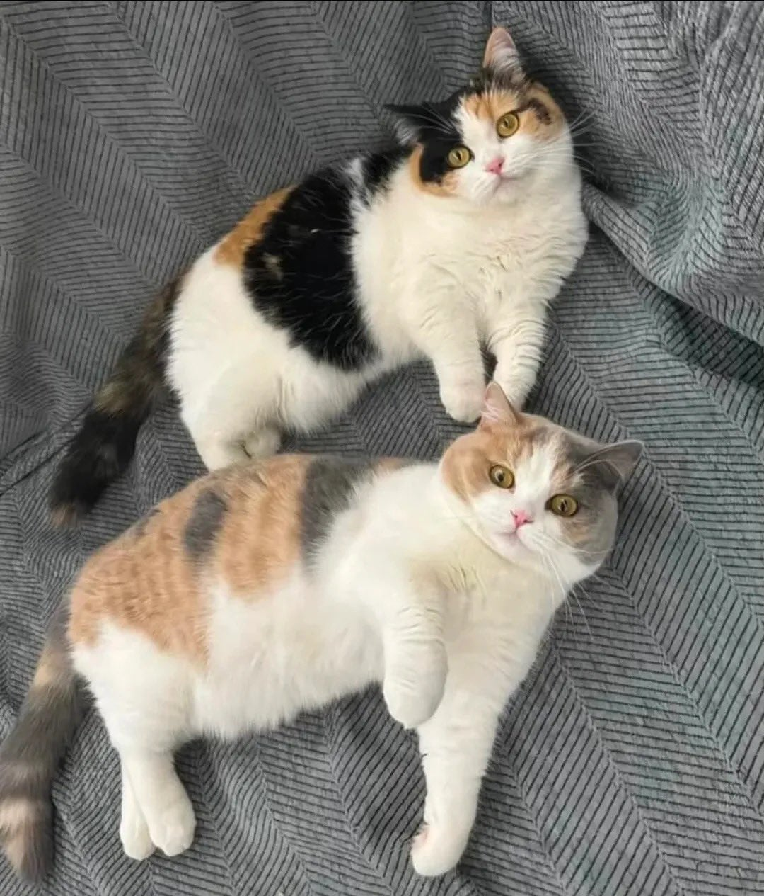
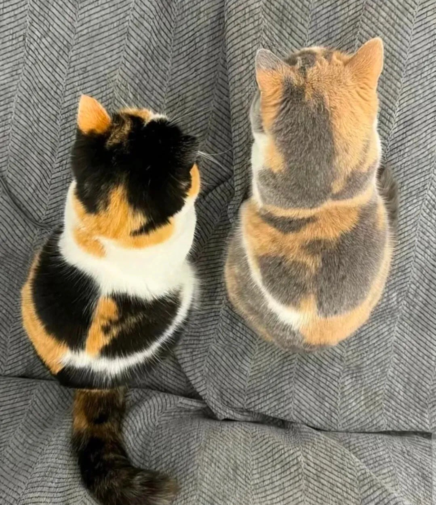
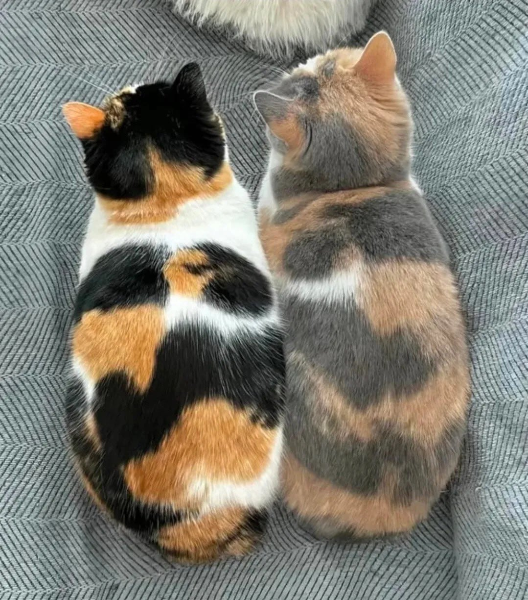

59 · 16 · 11 시간 전 · 원문



수집 당시 댓글 16개
푸크린 · 16 시간 전
한 번 삶았냐
↳ 답글 · 우메와모모의평범한일상 · 16 시간 전
두려워요 · 16 시간 전
그 새끼 고양이 3마리 만화 생각나네첫째가 잉크 쏟아서 점점 패턴 연해지는ㅋㅋ
↳ 답글 · 슈뢰딩거고양이 · 12 시간 전
https://m.ruliweb.com/community/board/300143/read/68136633이거 ㅎㅎ
길거리우체통 · 16 시간 전
1080p 720p
렙벨코즈 · 12 시간 전
OLED LCD
↳ 답글 · 페그마타이트광상 · 9 시간 전
oled ips
서울섹스킹 · 12 시간 전
질싸할때 뒷심이 약했나보네
↳ 답글 · 흑인랩퍼 · 11 시간 전
닉값;;
고구마고양이 · 12 시간 전
이모티콘혐오자 · 12 시간 전
락스 잘못썻네
읽을거리판 · 12 시간 전
옆엔 그냥 영혼입니다
으헝헝 · 11 시간 전
LED & VA vs OLED
오왕재 · 11 시간 전
커엽
패드립장인 · 10 시간 전
나이먹으면 연해지더라
닷드립독넷 · 2 시간 전
토너 개비싸

한 번 삶았냐